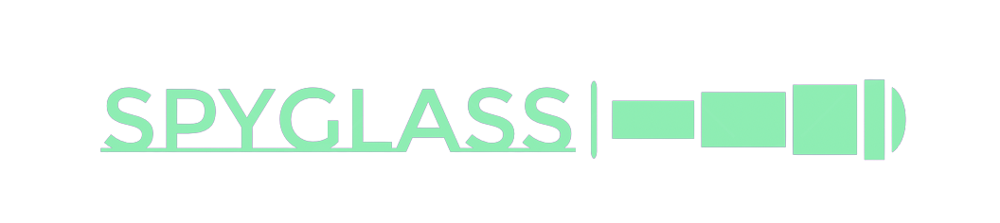

<mat-sidenav-container class="sidenav-container">
  <mat-sidenav
    #drawer
    class="sidenav"
    fixedInViewport="false"
    [attr.role]="(isHandset$ | async) ? 'dialog' : 'navigation'"
    [mode]="(isHandset$ | async) ? 'over' : 'side'"
    [opened]="(isHandset$ | async) === false"
  >
    <mat-toolbar>Menu</mat-toolbar>
    <mat-nav-list>
      <a mat-list-item href="#">Link 1</a>
      <a mat-list-item href="#">Link 2</a>
      <a mat-list-item href="#">Link 3</a>
    </mat-nav-list>
  </mat-sidenav>
  <mat-sidenav-content>
    <mat-toolbar color="primary">
      <button
        type="button"
        aria-label="Toggle sidenav"
        mat-icon-button
        (click)="drawer.toggle()"
        *ngIf="isHandset$ | async"
      >
        <mat-icon aria-label="Side nav toggle icon">menu</mat-icon>
      </button>
      <a
        *ngIf="authService.isUserLoggedIn(); else elseBlock"
        [routerLink]="['/user', username, 'goals']"
        >
      </a>
      <ng-template #elseBlock>
        <a [routerLink]="['login']">
          
        </a>
      </ng-template>

      <!-- Spacer -->
      <span class="spacer"></span>

      <!-- Link to View Goals -->
      <a
        *ngIf="authService.isUserLoggedIn()"
        [routerLink]="['/user', username, 'goals']"
        >View Goals</a
      >

      <!-- Link to Add Goals -->
      <a
        *ngIf="authService.isUserLoggedIn()"
        [routerLink]="['user', username, 'goals', 'add']"
        >Add Goals</a
      >

      <!-- Link to Logout -->
      <a
        *ngIf="authService.isUserLoggedIn()"
        (click)="handleLogout()"
        routerLink="/login"
        >Logout</a
      >

      <!-- Link to signup -->
      <a *ngIf="!authService.isUserLoggedIn()" [routerLink]="['signup']"
        >Signup</a
      >
    </mat-toolbar>
    <!-- Add Content Here -->
    <ng-content></ng-content>
  </mat-sidenav-content>
</mat-sidenav-container>
